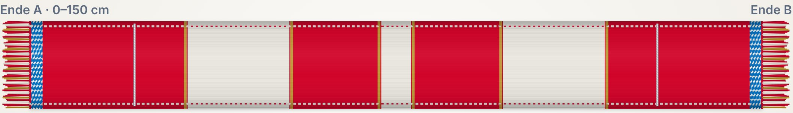
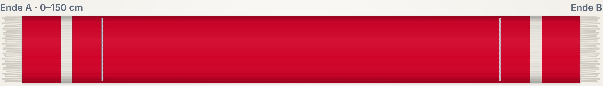
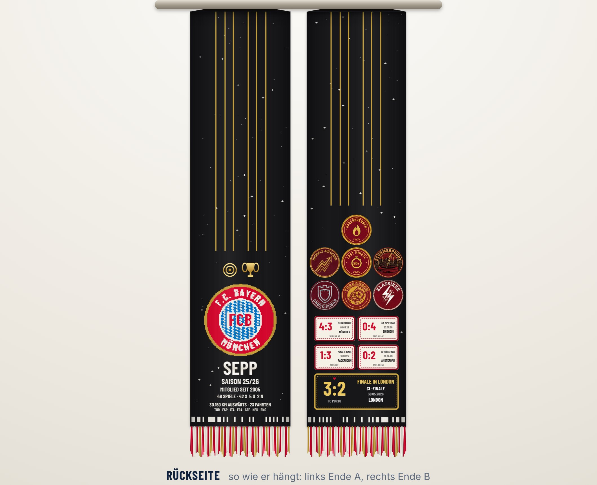
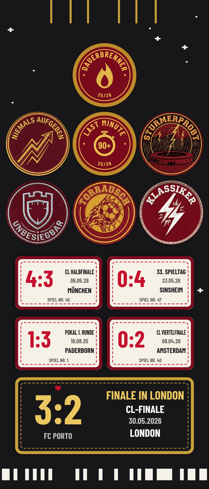
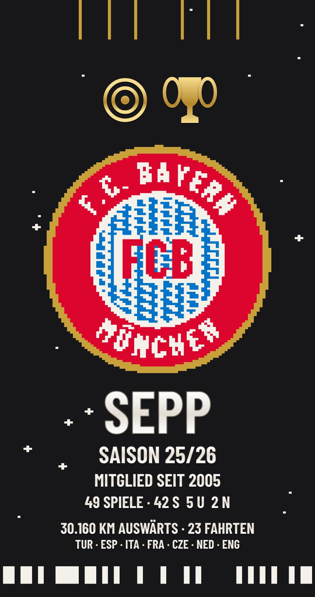

Ein Schal pro Saison, der nur aus den Spielen entsteht, die du wirklich im Stadion erlebt hast. Jeder Stadionbesuch bringt dich einem Meilenstein näher, und jeder Meilenstein verändert das Design. Am Saisonende wählt Gemini deine fünf größten Momente aus, dann wird genau dein Schal gestrickt. Kein Schal gleicht einem anderen, und es wird nur auf Bestellung produziert.



Ende A: eingestrickt das Wappen, darunter gestickt Name, Saison, Mitglied seit, Bilanz und Auswärtskilometer. Darüber erscheinen Trophäen, aber nur, wenn man beim entscheidenden Spiel dabei war.
Ende B: die von Gemini gewählten Spiele als gewebte Patches, das „Herzstück“ unten groß. Darüber sitzen die Moment-Patches wie „Klassiker“ oder „Niemals aufgeben“, in Weiß, Silber oder Gold, je nachdem, wie oft man den Moment erlebt hat.
Alle Schrift ist so ausgerichtet, dass man sie lesen kann, wenn der Schal um den Hals hängt.
Der Fan-Code verknüpft Mitgliedschaft und Tickets. Jedes besuchte Spiel wird automatisch erfasst.
31 Saison-Meilensteine in sechs Reihen verändern Streifen, Fransen, Rückseite und Patches. Die App zeigt live, wie der Schal wächst.
Gemini wählt die fünf wichtigsten Spiele und erzählt die Saison. Dann wird der Schal einzeln gestrickt, bestickt und versendet.
Gemini macht den Schal persönlich, ohne Fakten zu erfinden. Muster und Ergebnisse kommen aus echten Daten und festen Regeln.
SpäterAlte Papiertickets fotografieren, Gemini ordnet sie dem richtigen Spiel zu. So kommen auch Besuche ohne digitale Spur in die Historie.


An beiden Enden ist ein unauffälliges Streifenmuster eingestrickt, der Strickcode. Er enthält den Fan-Code und die Saison (45 Bit mit Prüfmuster). Fotografiert man den Schal mit der FC-Bayern-App, weiß sie sofort, wem er gehört und aus welcher Saison er stammt, und zeigt die Spiele, die Geschichte von Gemini und die Patches dazu.
So wird jeder Schal zum Zugang zur eigenen Fan-Geschichte, auch Jahre später. Im Prototyp wird der Code direkt aus dem Strickmuster zurückgelesen.
GestricktGrundfarbe, Streifen, Rauten, Goldfäden, Wappen und Strickcode, maximal 5 Garnfarben.
GesticktName, Saison, Zahlen, Trophäen und die Silberkordel.
AufgenähtSpiele- und Moment-Patches.
| Reihe | Was sich am Schal verändert |
|---|---|
| Treue | 7 Stufen von 1 bis 50 Spielen: 1 Streifen, 3 Streifen, Blockstreifen, zwei große Blöcke, Goldstreifen, Mittelstreifen, Rauten-Mitte |
| Wettbewerbe | Silberkordel (erstes CL-Spiel), schwarze Rückseite (5 CL-Abende), Trophäen nur beim Titel- oder Finalspiel |
| Auswärts | Auswärtsnaht, rot-weiße Fransen, Rauten-Enden, Reise-Zeile, goldene Naht und Fransen bei allen 17 Auswärtsspielen |
| Momente | 8 Patches, z. B. Torrausch, Klassiker, Niemals aufgeben, Sturmerprobt, Unbesiegbar, in Weiß, Silber oder Gold |
| Gegner-Sammler | 2, 4 oder 6 goldene Längsfäden für 6, 12 oder alle 17 Bundesliga-Gegner |
| Mitgliedschaft | Das Wappen wird mit den Jahren zum Traditions- und dann zum Retro-Wappen |
Ein Beweis echter Treue, den man nur erleben kann. Er gibt Anlass, öfter ins Stadion zu gehen, und wird über die Jahre zur Sammlung. Produktion nur auf Bestellung.
Interesse testen (Schalpotenzial in der App und kurze Umfrage), dann zwei bis drei Probeschals bei einer Einzelstrickerei und ein Pilot mit 50 bis 100 Fans.